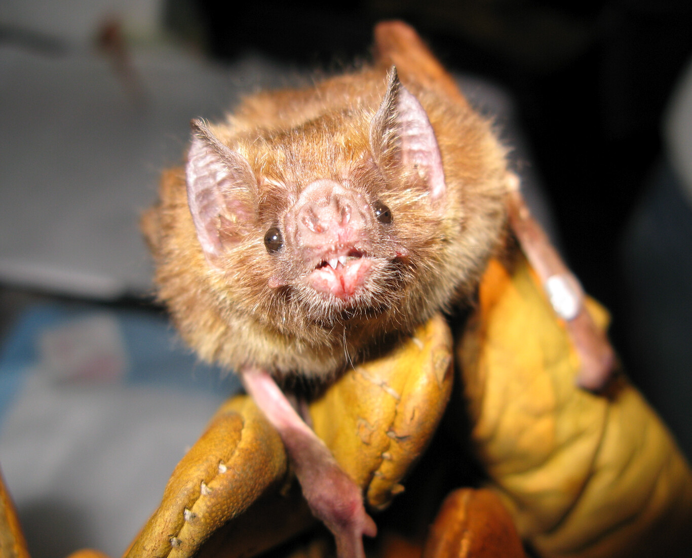
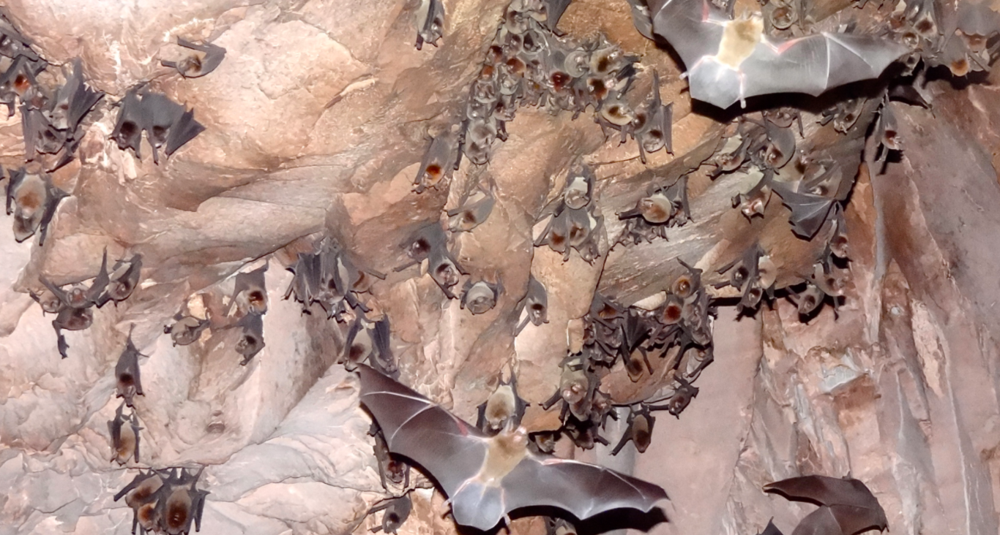

Varias de las últimas pandemias humanas han venido de los murciélagos y no tenemos ni idea de por qué
Contad conmigo. El Ébola, el primer SARS (síndrome respiratorio agudo severo), el MERS (síndrome respiratorio de Oriente Medio) y, en los últimos meses, el COVID-19. Todos estas son enfermedades originadas por virus que usan de reservorios a los murciélagos. Pero hay más: el virus del Marburg, el Hendra, el Cedar, el de Nipah, el de la rabia, un buen puñado de hantavirus y otro no menos desdeñable de coronavirus. Los murciélagos son una puñetera bomba de relojería.
Sin embargo, no sabemos por qué. No tenemos una explicación convincente de por qué los murciélagos aparentemente albergan más zoonosis que otras especies.Ahora un artículo de Science trata de poner un poco de orden en ese pequeño infierno en miniatura que se esconde dentro de nuestros primos lejanos, los murciélagos.
¿Qué les pasa a los murciélagos?
Por un lado, se cree que los mecanismos únicos en el sistema inmunológico de los murciélagos (que limitan, por ejemplo, la inflamación inducida por los virus), combinados con sus densas poblaciones y sus comportamientos altamente sociales, pueden haberles permitido evolucionar para tolerar una mayor cantidad de virus que en otros mamíferos.
Sin embargo, la investigación también revela que existe una enorme variación inmunológica entre las distintas especies de murciélagos. Una variación tan enorme que, siendo directo, unos no tienen nada que ver con los otros. Por eso, a poco que nos acercamos a los trabajos realmente existentes nos enfrentamos a más preguntas que respuestas. ¿Tienen realmente más virus los murciélagos o es que, quizás, son más peligrosos para los seres humanos? ¿Entendemos realmente cómo 'saltan' los virus de unas especies a otras? ¿En qué medida todas amenazas tienen más que ver con las prácticas humanas (sacrificio de poblaciones silvestres, el cambio de uso de la tierra, el comercio mundial de vida silvestre, etc.)?
En definitiva, "revisar las investigaciones que estudian a los murciélagos como posibles reservorios virales pone de manifiesto la necesidad de ampliar la investigación" mucho más allá de lo actual, explican Streicker y Gilbert. “La aparición de virus de los murciélagos es en gran medida impredecible e inevitable con el conocimiento disponible". Y, por eso mismo, "cualquier solución requiere expansiones cualitativas y cuantitativas2 sobre lo que sabemos de los murciélagos. Sobre todo, "atendiendo a la heterogeneidad entre individuos, poblaciones y especies".
Lo más interesante, no obstante, es que los mismos autores reconocen que hasta ahora acometer un proyecto así era inviable financieramente. No había suficientes recursos para realizar un estudio realmente ambicioso sobre los murciélagos como reservorios. Eso sí, a la vista de “los costos de la pandemia del COVID-19", esperan que cambien las cosas antes de que la siguiente zoonosis vuelva a parar el mundo.